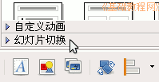
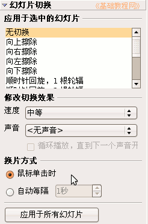
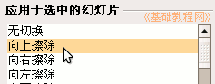

OpenOffice.org 教程之 Impress 演示文稿
作者：TeliuTe 来源：基础教程网
八、幻灯片切换 返回目录 下一课有时候我们想让一张幻灯片放完后，自动接着放下一张，下面我们来看一个练习；
1、打开演示文稿
1）启动Impress，点“创建”按钮，进入一个空白文档；
2）点菜单“文件－打开”命令，找到自己的文件夹，打开上一课的幻灯片“交互式操作”；
3）点菜单“文件－另存为”命令，以“幻灯片切换”为文件名，保存一下文件；
2、幻灯片切换
1）选中第一张幻灯片，点击展开右边窗格最下边的“幻灯片切换”折叠按钮；

2）右边的窗格中出现切换效果和换片方式；

3）在下边的 换片方式中，选择“自动每隔”，把后面的时间改为5秒，点下面的“应用于所有幻灯片”；
；
保存一下文件，放映一下，看看自动播放的效果；
4）返回窗口，选中第一张幻灯片，在右边的切换效果中，选择“向上擦除”；

5）同样选中第二张和后面的幻灯片，也设置好切换效果；
保存一下文件，放映一下看看切换的效果；
本节学习了Impress中幻灯片切换的基本操作，如果你成功地完成了练习，请继续学习下一课内容；
本教程由86团学校TeliuTe制作|著作权所有
基础教程网：http://teliute.org
美丽的校园……
转载和引用本站内容，请保留作者和本站链接。